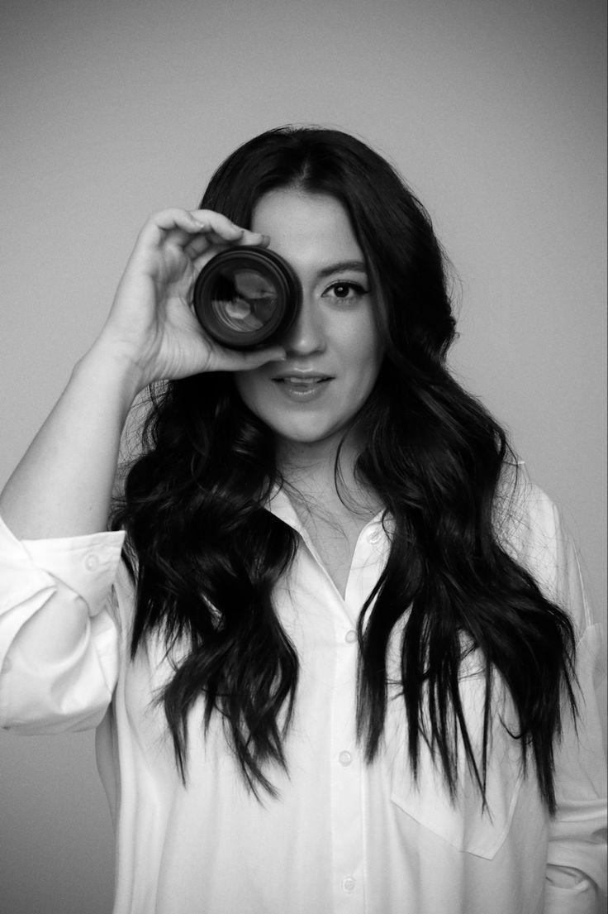
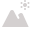

Sobre Mim
Marivane Melo é fotógrafa profissional, videomaker e editora de imagens e vídeos. Com um olhar aguçado para capturar momentos únicos e uma habilidade excepcional na pós-produção, Marivane transforma cada projeto em uma obra de arte visual.
Podemos conferir seus trabalhos e experiências recentes abaixo. ela considera a fotografia mais como sua paixão do que como profissão.
O que eu faço?
- Ensaios fotográficos: Ensaio individual, casal, gestante, família e newborn.
- Eventos: Cobertura de casamentos, aniversários, batizados e eventos corporativos.
- Fotografia comercial: Produtos, moda e gastronomia.
- Vídeos institucionais: Apresentações corporativas, vídeos promocionais e documentários.
Animais
Retratos
